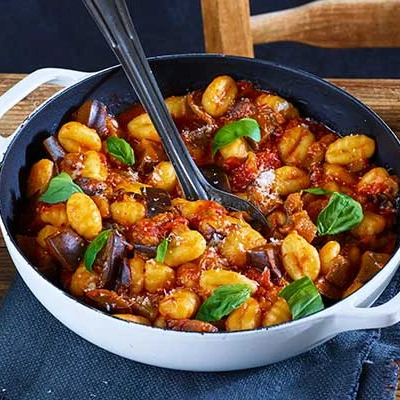

Gnocchi Alla Norma

Bring the flavours of Italy to your kitchen with gnocchi for dinner. Made with a delicious tomato, basil and aubergine sauce, it's a tasty midweek meal
Serves 4 | Takes 35 mins
main
Method
Heat the oil in a deep frying pan and fry the aubergine with a pinch of salt for 10 mins until golden brown and soft. Add the garlic and fry for 2 mins until fragrant. Tip in the tomatoes, then half fill the tin with water and add that too. Stir in the vinegar, chilli flakes if using, and basil stalks. Mash the tomatoes with a wooden spoon to break them up. Simmer for 15 mins until thickened and saucy. Season well, and check for sweetness. Add a pinch of sugar, or a dash more vinegar, if you like. Boil the gnocchi in salted water for 1–2 mins until just starting to rise to the top of the water. Drain, keeping some of the cooking water. Add the gnocchi to the sauce with a splash of the cooking water to loosen if necessary, then remove from the heat. Mix the gnocchi into the sauce, then stir in some of the basil. To serve, scatter with more basil and grate over the parmesan.